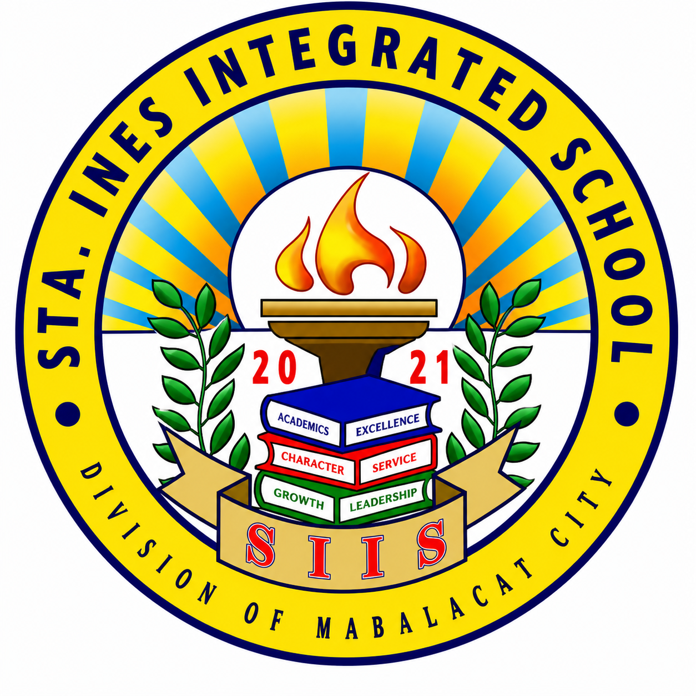

Myriad
Myriad


 Myriad
Myriad
Jericho is a 19-year-old student from Sto. Rosario, Magalang, Pampanga, currently studying ACT at Clark College of Science and Technology (CCST). An academic achiever since Junior High, they have consistently demonstrated dedication to their studies while balancing personal creative pursuits.
Outside the classroom, Jericho spends much of their time developing their skills in drawing and exploring fictional worldbuilding. With a strong interest in storytelling, they enjoy brainstorming ideas and crafting imaginative concepts, alongside quieter hobbies such as gardening.
Naturally curious, they are someone who enjoys learning across different fields, even if motivation sometimes comes in waves. At their core, they value authenticity and believe in staying true to oneself. Currently, Jericho is focused on improving both their artistic abilities and coding skills, steadily working toward personal growth and creative expression.

Mabalacat, Pampanga
2013 – 2019
Completed elementary education with a steady and consistent academic progression. Built foundational competencies in core subjects such as reading, writing, and mathematics, while also developing essential social and communication skills. During these early academic years, maintained a balanced approach to school and personal life, prioritizing personal experiences alongside education. Although not actively involved in extracurricular activities or formal leadership roles, this period contributed to early self-awareness and understanding of personal growth. These experiences later became a foundation for developing a more focused and goal-oriented mindset in subsequent years.

Magalang, Pampanga
2019 – 2023
Completed junior high school with a marked improvement in academic performance and personal discipline. Recognized as an honor student from Grades 8 to 10, consistently maintaining strong academic standing throughout these years. Although not actively involved in extracurricular activities or leadership roles, demonstrated a growing commitment to academic excellence and self-improvement. This period marked a significant turning point, as personal motivation strengthened through reflection on family influences and expectations. This shift resulted in increased consistency, responsibility, and a clearer sense of academic direction
Magalang, Pampanga
2023 – 2025
Completed Senior High School under the Science, Technology, Engineering, and Mathematics (STEM) strand, demonstrating consistent academic excellence. Awarded With High Honors in both academic years and ranked 1st in class, reflecting sustained dedication, discipline, and strong performance across subjects.
Actively participated in academic competitions, particularly quiz bees, joining four events and securing a 1st place finish in one of them. While not holding formal leadership positions or organizational roles, contributed through academic representation and competitive engagement.
This period also marked personal growth beyond academics, including building meaningful friendships and developing a stronger sense of belonging within peer groups.
My career goal is to become a game developer, focusing on creating experiences that feel both engaging and meaningful. I want to build games that go beyond just mechanics, where players can get immersed in worlds that feel alive and thoughtfully designed. My aim is to combine creativity and technical skill to develop interactive experiences that leave a lasting impression. While I’m still growing and exploring different areas of development, I’m especially drawn to roles that let me shape both the systems and the storytelling aspects of games.
I’m deeply interested in art and worldbuilding, especially when it comes to creating original worlds that feel rich and fantastical. I enjoy drawing inspiration from real life and different fictional works, blending them into something new and personal. A lot of my creativity comes from observing details in everyday life and reimagining them in different settings or narratives. Overall, I enjoy the process of building ideas from the ground up, whether it’s designing world systems, environments, or entire worlds that feel connected and meaningful.